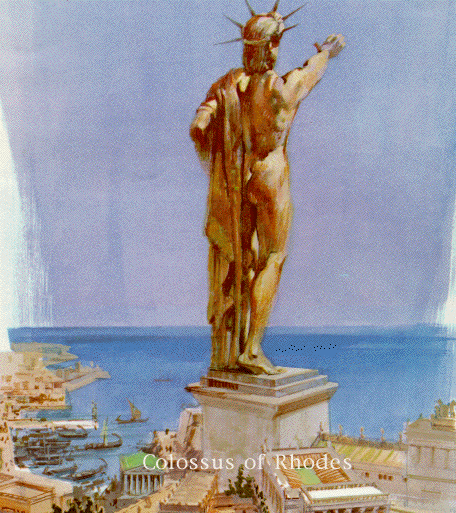

The Colossus of Rhodes
"To you, O Sun, the people of Dorian Rhodes set up this bronze statue reaching to Olympus when they had pacified the waves of war and crowned their city with the spoils taken from the enemy. Not only over the seas but also on land did they kindle the lovely torch of freedom."
-- Dedicating inscription of the Colossus
The most short-lived of the seven wonders, the Colossus of Rhodes stodd for only 56 years. however, it spent almost 900 years laying on the ground. Pliny the Elder said "But even lying on the ground, it is a marvel." As is the case with the other wonders, not only is it an engineering feat, but it also serves as a symbol of the people who built it.
The Colossus of Rhodes was built at the entrance of the harbor of Rhodes, a Greek island near Asia Minor (Anatolia). The project was designed by Chares of Lindos, a Rhodian sculptor. The Colossus did not span the main harbor of Mandraki as it is sometimes shown, but instead spanned the eastern opening of that harbor. The Colossus was 33 meters tall and took 12 years to complete, with work finishing up in 282 B.C. The skin of the Colossus was bronze and the base was made up of white marble. The bronze skin was supported by and internal iron and stone framework. The Colossus fell victim to an earthquake in 226 B.C. and weak knees. Ptolemy III offered to restore the statue, but an oracle was consulted that forbade the repairs.
The statue layed on the ground until 654 A.D. when invading Arabs disassembled the Colossus and sold off the parts to Jews from Syria. Legend states that it took 900 camels to carry the remains. While we do not know the exact appearance of the Colossus it has inspired other artists, most notably Auguste Bartholdi. Bartholdi is most famous as the creator of The Statue of Liberty.